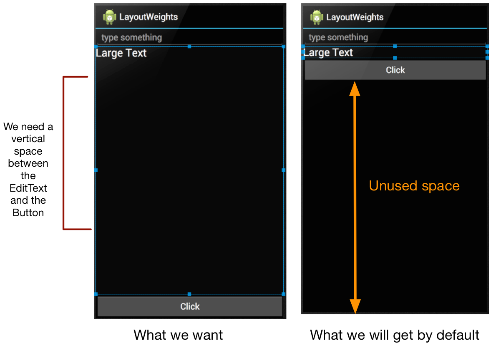

Layout Weights and Gravity
Layout Weights
A project created with a default Activity will include an XML file and an Activity class. These two are given to you so you can get started quickly in displaying at least one screen in your application. The screen is of vanilla construction. This default layout is mostly used for some quick fire challenges. The kinds of things you do when you just want to test some things.
Real applications typically display some sophistication in their layouts. Let's look at one small change you can do to effect some layout changes. The code snippet below is typical of the vanilla XML file given to us during project creation.
Review of LinearLayout
<?xml version="1.0" encoding="utf-8"?> <LinearLayout xmlns:android="http://schemas..."> android:orientation="vertical" android:layout_width="fill_parent" </LinearLayout>
The orientation is set to vertical and the layout_width is set to fill_parent. With those setting in effect, each View component you will add to this layout will be stacked on top of each other. The first View object to be added will be the one on top, the next View object will follow suit.
<LinearLayout> android:orientation="vertical" android:layout_width="fill_parent" <Button ... /> <CheckBox ... /> </LinearLayout>
The preceding code example will result in a screen which has a CheckBox with a Button View right on top of it. The Button occupied whole width of the screen because the LinearLayout container says fill_parent on its layout width. The Checkbox did the same, it spanned the whole width of the screen for the same reason the Button did. No surprises here. This is how a linear layout is supposed to work. The behavior is expected.

There are some class of applications for which this kind of layouting might be okay. If the screen for example just wants to display a series of check boxes stacked on top of each other, like in a survey form, then this layout will suffice. No further tweaking is needed.
Weighted layout
Let's go to another layout example. Suppose we create a screen that allows a user to enter some data and when the user clicks a button, whatever he entered onto the text box will be added to a static text View, like a label. To build this example, we will need the following View objects: EditText, TextView and Button.
An EditText View allows for user input. If you have programming experience, you may have called this by a different name, perhaps you referred to it before as a textfield. Its the same thing. A TextView is a static text control. Some programmers call it a label. And you already know what a Button View does.
Once we have created a new project with a default Activity, we can add the Views to our Layout. It could look like the next code sample
<LinearLayout
android:orientation="vertical"
android:layout_width="fill_parent"
android:layout_height="fill_parent"
xmlns:android="http://schemas.android.com/apk/res/android">
<EditText
android:layout_width="match_parent"
android:layout_height="wrap_content"
android:id="@+id/editText"
android:layout_gravity="center_horizontal"/>
<TextView
android:layout_width="match_parent"
android:layout_height="wrap_content"
android:textAppearance="?android:attr/textAppearanceLarge"
android:text="Large Text"
android:id="@+id/textView"
android:layout_gravity="center_horizontal"/>
<Button
android:layout_width="match_parent"
android:layout_height="wrap_content"
android:text="New Button"
android:id="@+id/button"
android:layout_gravity="center_horizontal"/>
</LinearLayout>
This will result to a screen where the EditText, TextView and the Button are stacked on top of one another. Each of the Views stretching out to the whole width of the screen. That may not be a problem for the width but it will be a problem for the height. Each View will vertically occupy just what it needs to display their content. The Button will size its height just enough to accomodate its label, the TextEdit will size itself accordingly to accomodate its current textual content and the EditText will size itself to accomodate a single line text input.

The screen layout is not tight. There is plenty of unutilized screen space after the Button which makes the design clumsy. Putting screen space to good use gives the the app a more sophiscticated look.
A small change we can make is to anchor the EditText and the Button on the opposite sides of the screen, top and bottom to be precise, so that the TextEdit can stretch itself vertically in between and occupy whatever space is left. To achieve this result, we will assign layout weights on each View.
LinearLayout allows weight assignment for each View that is contained within. All Views by default are assigned a weight of zero. If the weight of a View is zero, the View cannot grow in space beyond what it needs to display its content. A View whose weight is more than zero is deemed to be more important. Hence it is allowed to stretch and hog the remaining space left on the screen.
To achieve our desired layout, we will make the weight of the Button and EditText zero and assign a weight of one to the TextView
<LinearLayout
android:orientation="vertical"
android:layout_width="fill_parent"
android:layout_height="fill_parent"
xmlns:android="http://schemas.android.com/apk/res/android">
<EditText
android:layout_width="match_parent"
android:layout_height="wrap_content"
android:id="@+id/editText"
android:layout_gravity="center_horizontal"
android:layout_weight="0"/>
<TextView
android:layout_width="match_parent"
android:layout_height="wrap_content"
android:textAppearance="?android:attr/textAppearanceLarge"
android:text="Large Text"
android:id="@+id/textView"
android:layout_gravity="center_horizontal"
android:layout_weight="1"/>
<Button
android:layout_width="match_parent"
android:layout_height="wrap_content"
android:text="New Button"
android:id="@+id/button"
android:layout_gravity="center_horizontal"
android:layout_weight="0"/>
</LinearLayout>
The EditText and Button Views are now pushed to the top and bottom and the TextView stretched its height to fill up the gap left by other two Views. Because only the TextView is assigned a weight more than zero, it is the only View that can grow beyond what it needs for display.
Had we assigned all three Views equal weights of 1, all of them will grow in space beyond what they need but they will grow uniformly. The whole screen will be divided by three components. If we assigned each of them a weight of 2, you will not see any difference when they all had a weight of 1. Interesting things happen Views are assigned varying weights.